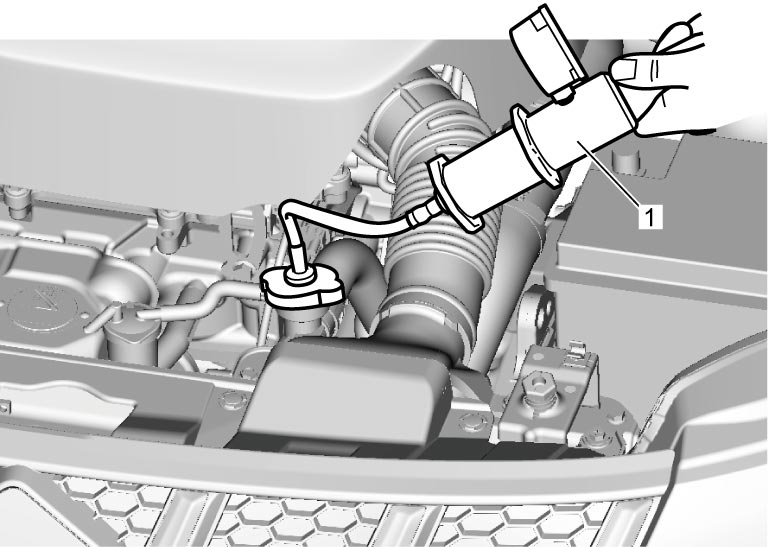
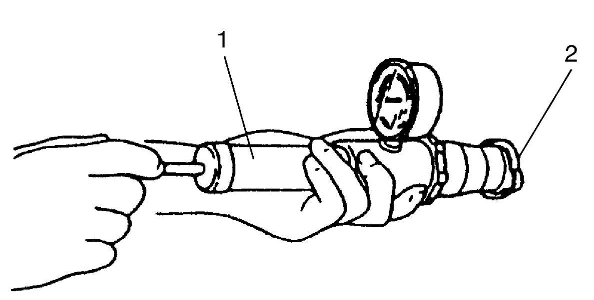

1F
| Engine Cooling System Inspection |
Before performing the following procedure, observe Precautions for Cooling System:K14C.
1)Check cooling system for leakage or damage.
2)Remove radiator cap.
3)Check coolant for proper level and freeze protection.
4)Check cooling system for coolant leakage according to the following procedure.
a)Attach pressure tester (1) to water filler, and then apply specified pressure to cooling system.

Cooling system holding pressure
123 kPa (1.3 kgf/cm2, 17.8 psi)

 "Expand image")
b)Check that cooling system holds the pressure.
If cooling system does not hold applied pressure, check cooling system for coolant leakage.
If cooling system does not hold applied pressure, check cooling system for coolant leakage.
5)Check radiator cap according to the following procedure.
a)Attach pressure tester (1) to radiator cap (2), and then apply specified pressure.
Radiator cap valve opening pressure
93 – 123 kPa (0.9 – 1.3 kgf/cm2, 13.5 – 17.8 psi)

 "Expand image")
b)Check that radiator cap releases applied pressure.
If the pressure at which radiator cap releases air is higher or lower than specified pressure, replace radiator cap.
If the pressure at which radiator cap releases air is higher or lower than specified pressure, replace radiator cap.
6)Detach pressure tester and rinse off spilled coolant.
7)Install radiator cap on water filler.